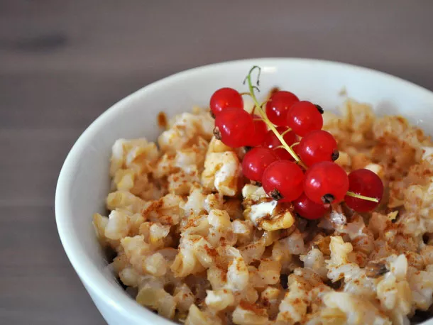

Barley Porridge

About This Recipe
Barley is a great substitute for oatmeal in a hearty porridge. Give it flavor with brown sugar and cinnamon, then add chopped walnuts, heavy cream, or fresh fruit.
Ingredients
- 2 cups cooked barley
- 1/2 cup milk
- 2 teaspoons brown sugar
- 1/4 teaspoon cinnamon
- 2 tbsp chopped toated walnuts
- Heavy cream
- Fresh fruit for serving
Directions
- Combine barley, milk, brown sugar, and cinnamon in a medium saucepan over medium heat.
- Cook, stirring occasionally, until milk has almost been all absorbed, about 15 minutes.
- Divide barley between two bowls.
- Top with chopped walnuts, a generous drizzle of heavy cream, and chopped fresh fruit if desired.
Recipe and image by Carrie Vasios Mullins
Home
Barley Porridge
Brunede Kartofler
Salmon with Dill Sauce